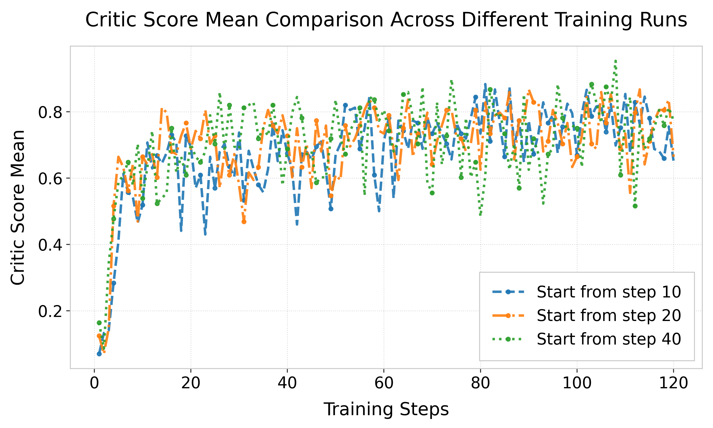

Our ICT framework consistently outperforms standard GRPO across different model scales. Updating only the top 10% of unique tokens achieves state-of-the-art reasoning performance.

Figure 5: Reward trajectories across different warm-up onset steps (10, 20, 40).

Figure 6: Ratio of high-entropy to low-entropy unique tokens for Math & GSM8K.
⚙️ Robustness & Token Properties
1. Warm-up Independence
A critical requirement for any reinforcement learning framework is its temporal robustness. As demonstrated in the evaluation of intervention timing, the ICT framework maintains exceptional stability regardless of when the sparse update logic is introduced. Whether the transition from dense to sparse training begins early (step 10) or late (step 40), all trajectories converge to a consistent reward plateau. This proves that the method is not sensitive to initial policy noise and can effectively stabilize the training landscape across various stages of model development.
2. Structural vs. Uncertainty
Our analysis further reveals a fundamental distinction between structural uniqueness and scalar uncertainty. While traditional exploration strategies prioritize high-entropy tokens, the ICT framework identifies critical decision hubs that are often overlooked. The evidence shows an approximately 1:1 ratio between high-entropy and low-entropy tokens among the identified "unique" sets. This indicates that even tokens with high model confidence can be essential branching points for logical reasoning. By targeting these structural markers, the model preserves strategic purity while avoiding the chaos of blind exploration.